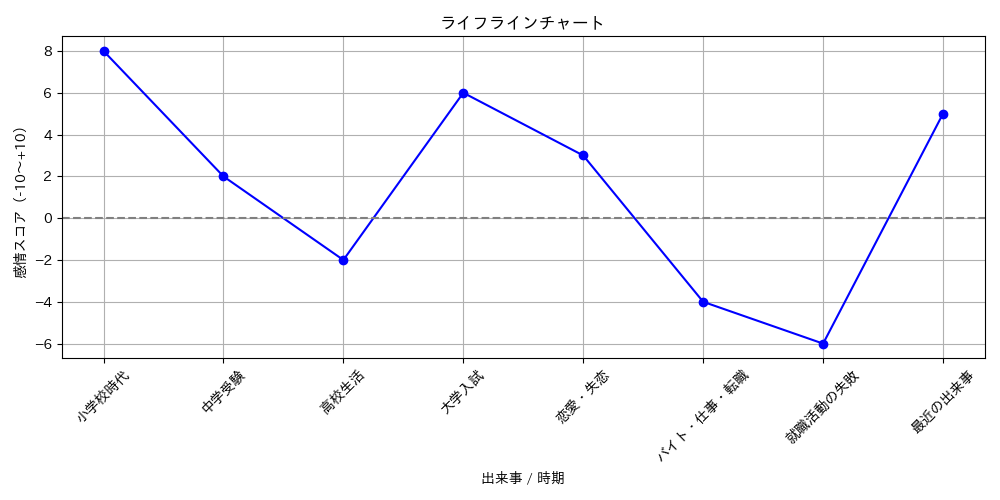
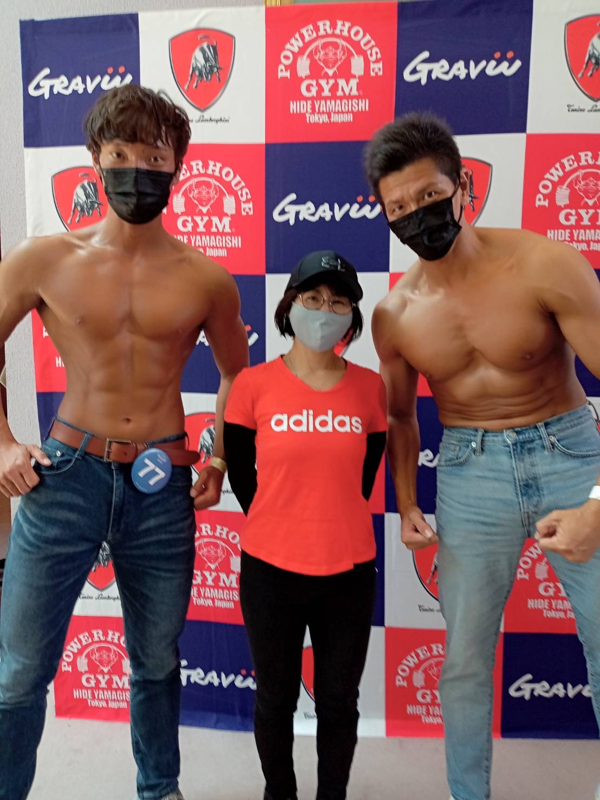

私の自己紹介ページ
ライフラインチャート
以下は、私の感情のアップダウンを可視化したライフラインチャートです。

趣味
・筋トレ：
２度のリバウンドをきっかけにダイエット目的のために初め今でも継続しております。
・料理：
簡単で栄養価が高い料理を日々作ることに喜びを感じております。
・サウナ：
初めて整った時の衝撃が忘れられずに今でも定期的に通っています。
・読書：
最低でも月に1冊以上は読んでいます。様々なジャンルの本を読んでおります。
自己研鑽
・英語：
今年の留学を機にTOEIC600点を今年の目標に掲げ、日々勉強しております。
プロフィール画像
